Temporada 8
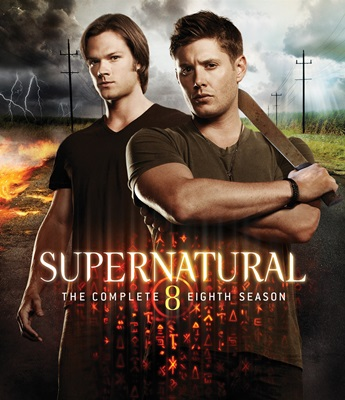
Na Oitava Temporada começa com Dean escapando do Purgatório, embora Castiel esteja longe de ser encontrado. No entanto, Dean não está sozinho. Ele voltou com um misterioso companheiro de guerra, cuja razão para a fuga é, talvez, mais do que Dean esperava. Dean em seguida, viaja para a casa segura em Whitefish, Montana, onde ele se encontra com Sam. Quando perguntado sobre sua vida, Sam diz que ele abandonou seus telefones, largou a caça, e está levando uma vida normal com uma namorada. Sam, Dean descobre que Kevin Tran (Osric Chau) escapou de Crowley e está agora fugindo. Além disso, ele uma outra Palavra de Deus, sobre Demônios que continha uma forma de selar as portas e banir todos os demônios da Terra para sempre.
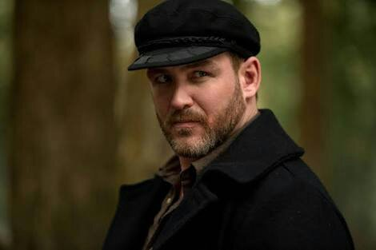
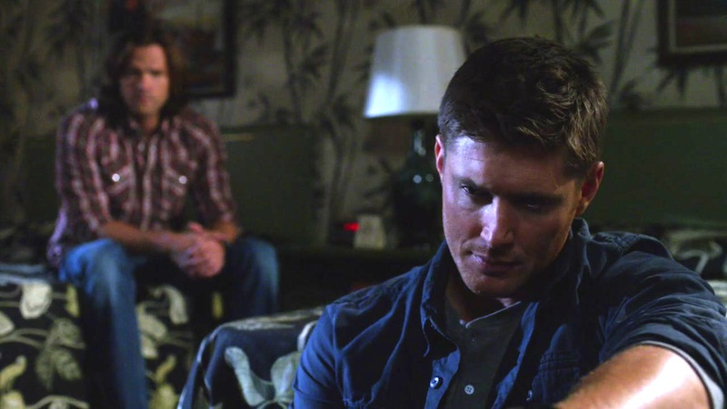
Durante a espera da tradução de Kevin, Henry Winchester, avô dos irmãos, vem para o futuro para e trás consigo Abaddon, um dos cavaleiros do inferno. Henry diz ser um Homem de Letras, um grupo que pesquisa como combater o Sobrenatural. Ao encontrar Abaddon, eles conseguem prendê-la, mas Henry acaba não resistindo.
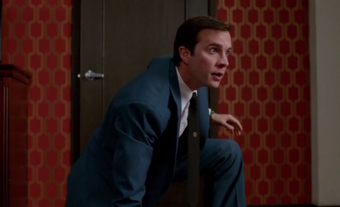
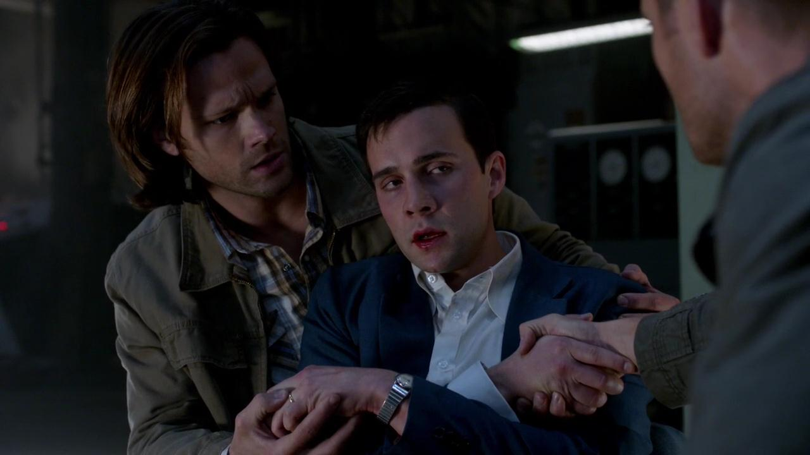
Kevin decifra o a palavra de Deus e descobre como fechar os portões do inferno. Ele fala para Sam e Dean que de acordo com a tabua uma pessoa deve enfrentar uma série de três testes designados por Deus. O primeiro é matar um cão do inferno. Sam e Dean discutem sobre quem deve completar esses desafios e Dean, como irmão mais velho, decide que ele vai fazê-los. Entretanto, devido às circustâncias, Sam executa o primeiro teste.
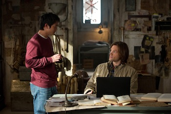
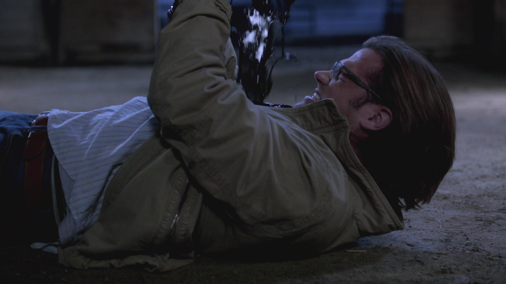
Sam e Dean respondem a um telefonema de Kevin, que fica apavorado depois de ouvir a voz de Crowley em sua cabeça. Depois de ouvir as notícias de Kevin, Sam e Dean se juntam a um ceifeiro chamado Ajay, que os ajuda a lidar com o segundo teste da placa: liberar uma alma do inferno para o céu. Ajay diz que há uma passagem escondida no purgatório direto para o inferno. Crowley encontra Ajay e o mata por traição, fazendo com que Sam fique preso no purgatório. Enquanto isso, Dean recebe uma visita de Naomi e percebe que ele deve encontrar Benny e pedir um enorme favor: que Benny vá até o purgatório ajudar Sam. Para isso, Dean precisa matá-lo.
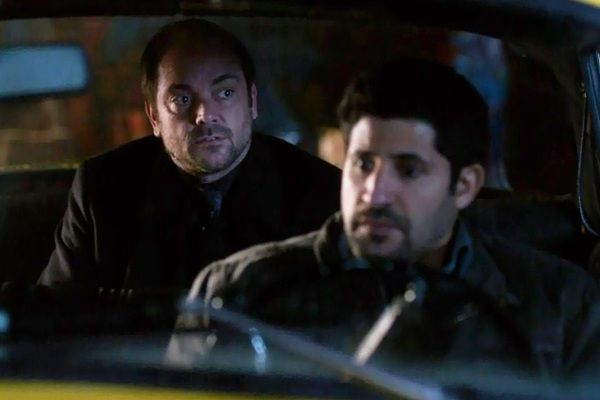
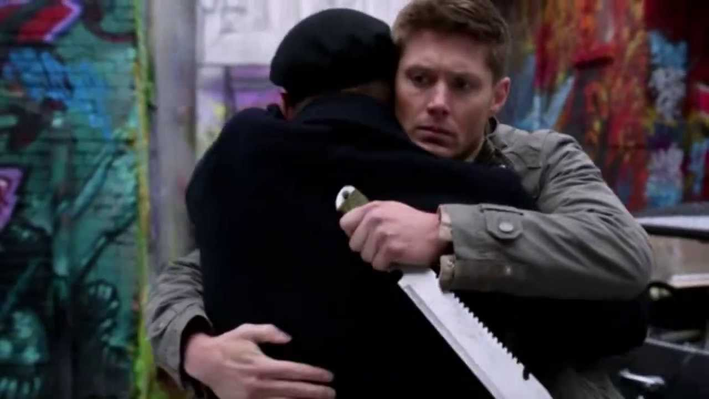
Com Crowley pronto para desfazer todo o bem que já fizeram como caçadores, Sam e Dean se encontram encurralados. Mas com a ajuda de Kevin, os irmãos Winchester fizeram uma última jogada contra o demônio. O terceiro teste é curar um demônio e Crowley é o escolhido para esse feito. Metatron inicia um plano com Castiel para enfrentar Naomi e a burocracia do Paraíso. Ele diz a Castiel que sabe como melhorar o Céu, mas era tudo um plano para que Metaton expulsasse todos os anjos do Céu. Durante a cura de Crowley, Dean descobre que ao finalizar esse teste, Sam morreria, então ele impede o mesmo, não fechando as portas do inferno. Ao final, Metaton consegue fazer com que todos os anjos do Céu caíssem na Terra.
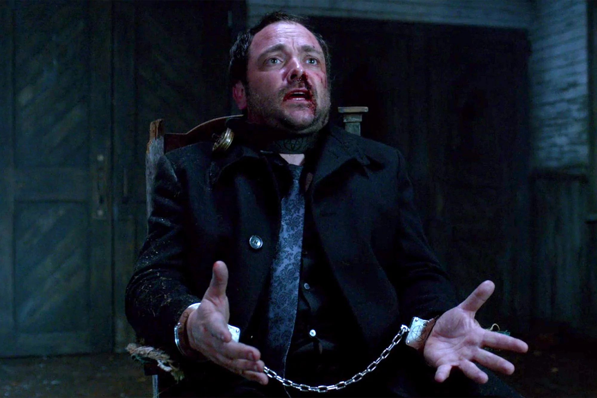
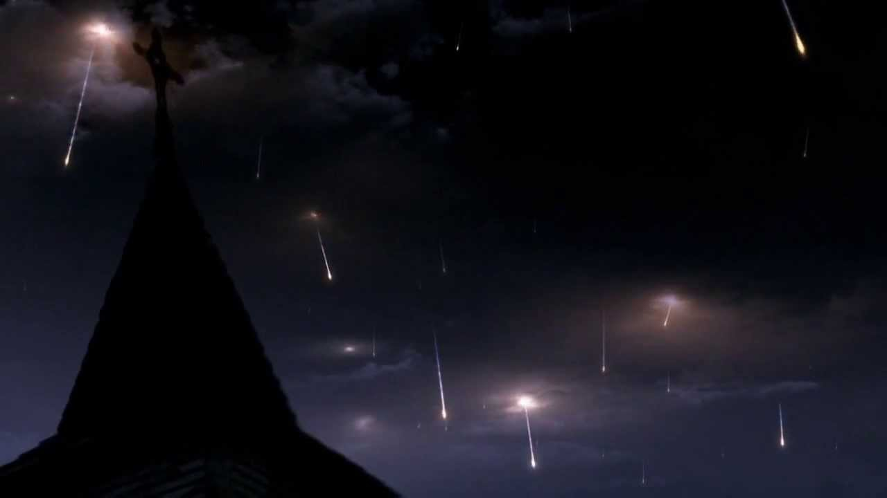